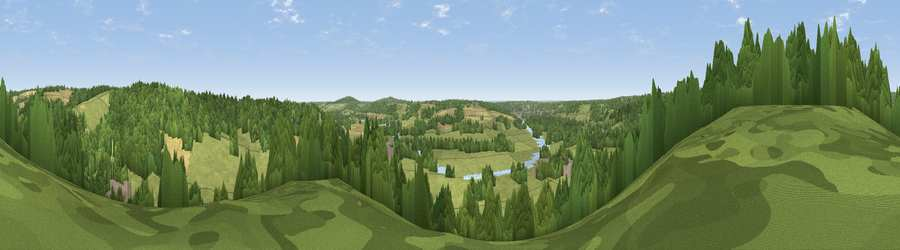

Viewpoint near Hambleden
#28100 in England · top 27% of its area beats it · near HambledenThe view, rendered

A 360° render of this exact spot computed from the terrain model, tree cover and land cover — summer colours, afternoon light, calibrated against photographs of famous viewpoints. Real trees, hedges and buildings will differ in detail.
The panorama
Grey silhouette: terrain skyline in each direction (720 bearings, Earth curvature and refraction included). Dashed green: skyline with trees (+15 m) and buildings (+8 m) as obstacles. Blue strip: how far the ground is visible on each bearing.
Where the view opens
Wedge length = distance to the farthest visible ground on that bearing (vegetation-aware). Rings at 10, 25 and 50 km.
What fills the view
55% grassland · 36% woodland · 6% cropland · 2% built-up · 1% water
Angular shares of the visible panorama (visual magnitude), not map area. Landscape diversity 0.43 (0–1 Shannon).
Key numbers
More beautiful places nearby
The staircase of upgrades: each row has a higher view potential than everything closer. Driving times are estimates from straight-line distance, calibrated against real road routing — check an actual route before setting out.
| Place | Direction | Drive | Score |
|---|---|---|---|
| Viewpoint near Turville | NNW · 3 km | ~8 min | 50.4 |
| Viewpoint near Fawley | WNW · 5 km | ~10 min | 56.1 |
| Fultness Wood Hill | ESE · 8 km | ~16 min | 57.8 |
| Viewpoint near Watlington | NW · 11 km | ~20 min | 67.1 |
| Viewpoint near Watlington | NW · 11 km | ~21 min | 70.6 |
| Viewpoint near Lewknor | NW · 11 km | ~22 min | 70.8 |
| Viewpoint near Lewknor | NNW · 12 km | ~23 min | 74.4 |
| Coombe Hill Monument | NNE · 22 km | ~36 min | 75.5 |
51.56905, -0.87491 · source: screening · position refined by local search. Computed location — check access rights before visiting.